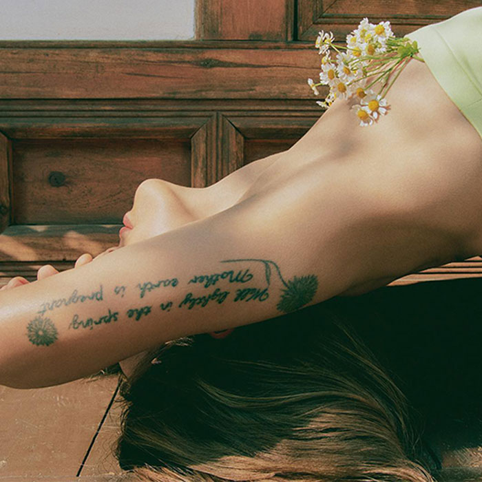
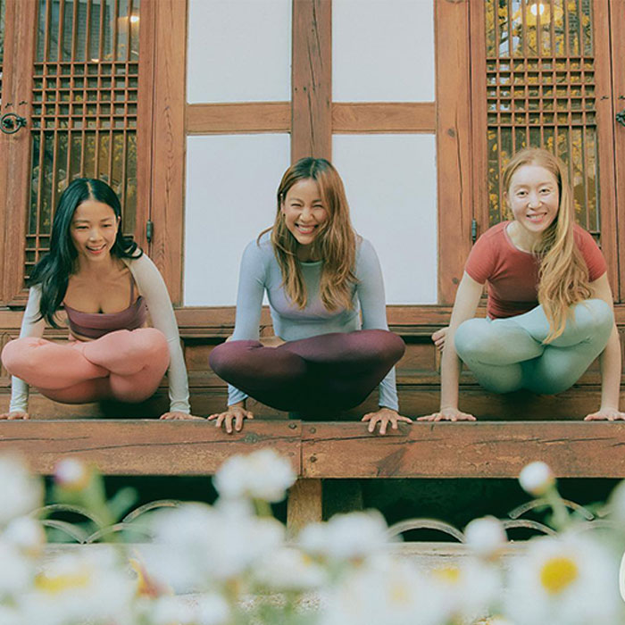
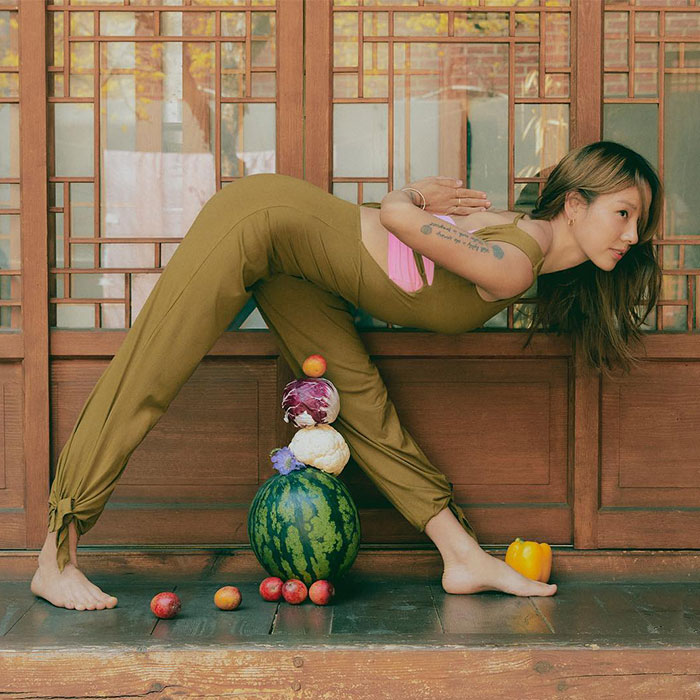
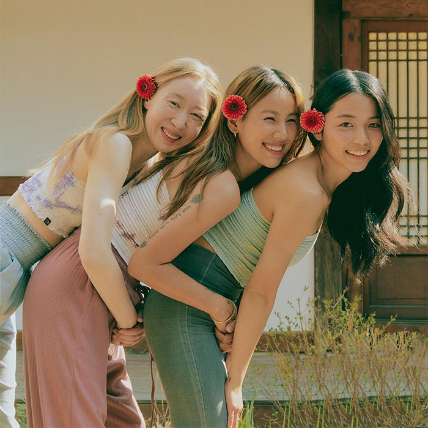
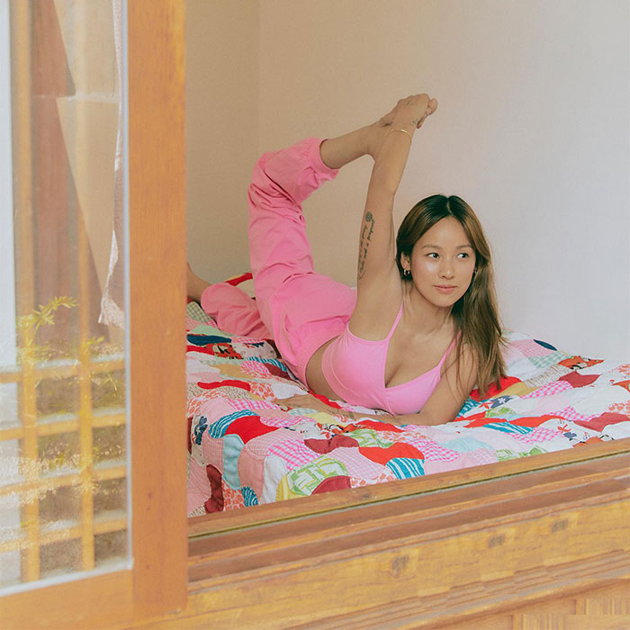
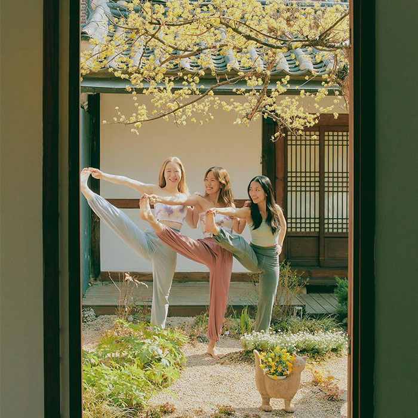
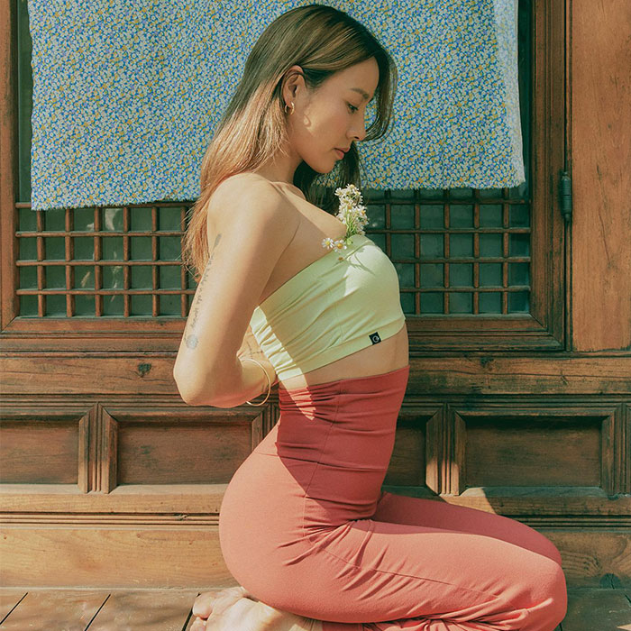
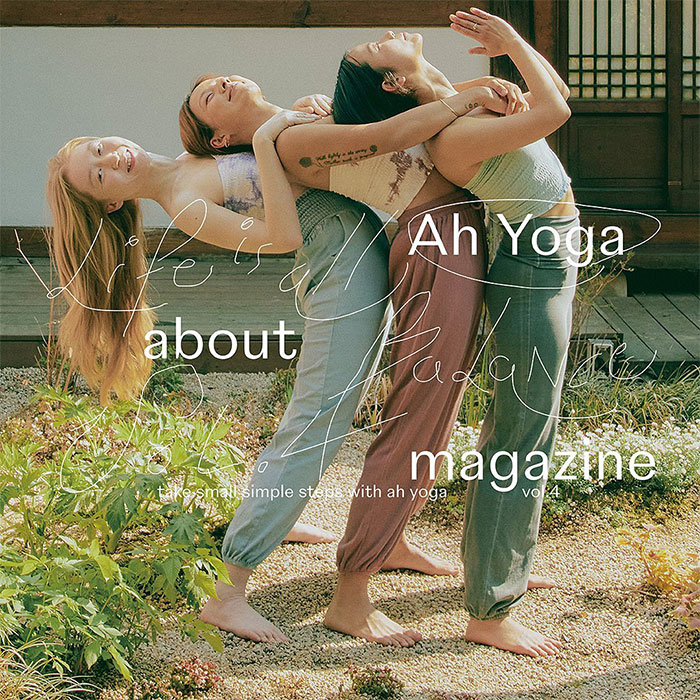

magazine
Life is all about Balance
with Lee hyo lee


사무실의 의자를 이용한 간단한 요가 스트레칭,
<아요가>가 특별히 애정하는 브랜드의 소개 등
다양한 내용들로 알차게 구성했습니다.
<아요가>가 특별히 애정하는 브랜드의 소개 등
다양한 내용들로 알차게 구성했습니다.


위트있는 시선으로 접근한 화보들,
전문가가 알려주는 밸런스를 찾는 자세,
삶의 양극단을 조절하며 균형을 맞춰가는 사람들의 인터뷰
전문가가 알려주는 밸런스를 찾는 자세,
삶의 양극단을 조절하며 균형을 맞춰가는 사람들의 인터뷰


이번 호의 주제는 몸과 마음의 균형, Balance 입니다.
"Life is All about Balance"
"Life is All about Balance"


<아요가>는 요가를 하며너 삶의 균형을 찾아가는
건강한 사람들의 이야기를 나누고자 발행한
라이프스타일 잡지입니다.
건강한 사람들의 이야기를 나누고자 발행한
라이프스타일 잡지입니다.

TAKE SMALL SIMPLE STEPS with
AH YOGA
TAKE SMALL SIMPLE STEPS with
AH YOGA
TAKE SMALL SIMPLE STEPS with
AH YOGA
TAKE SMALL SIMPLE STEPS with
AH YOGA